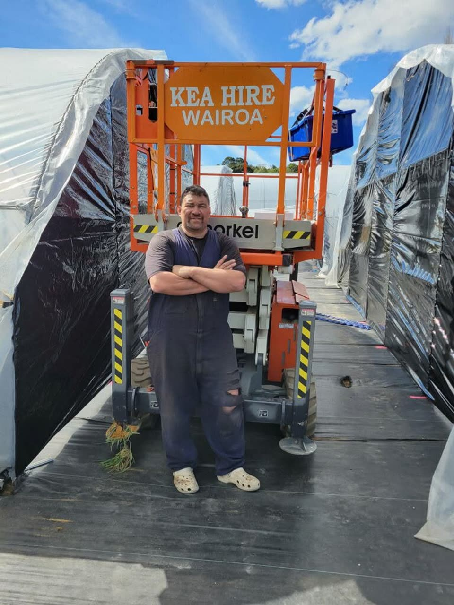
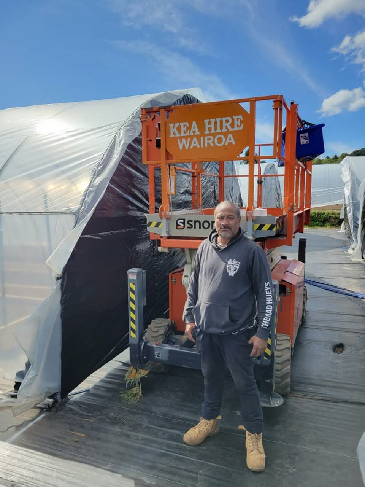
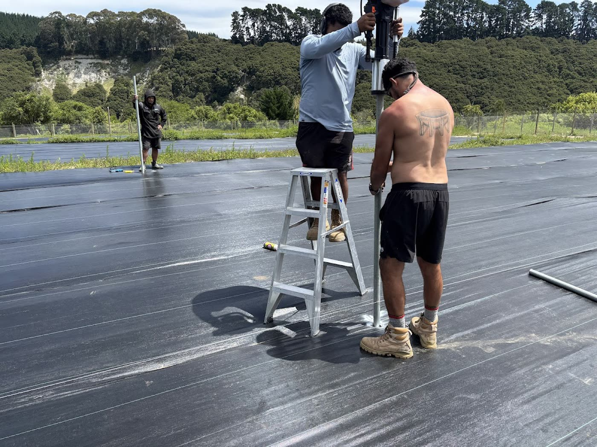
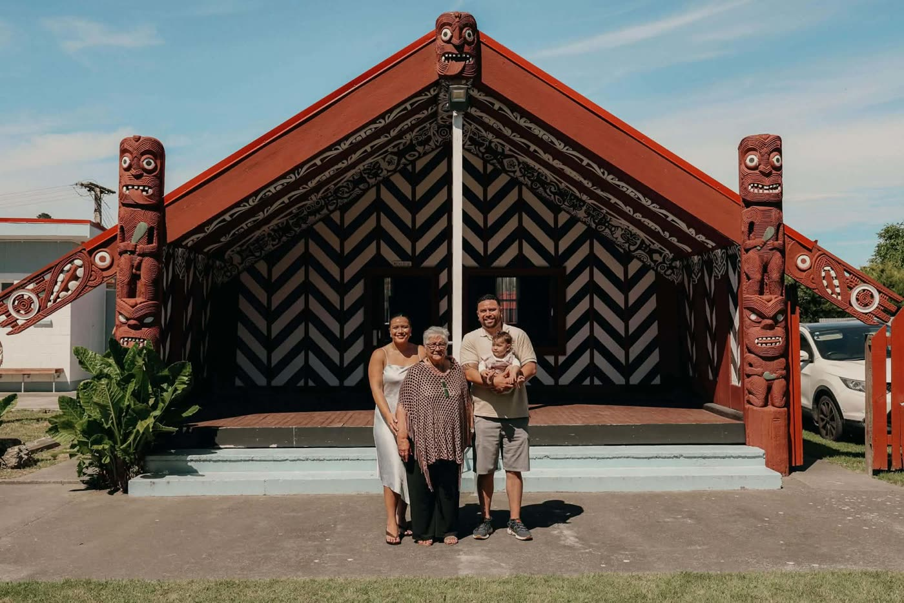
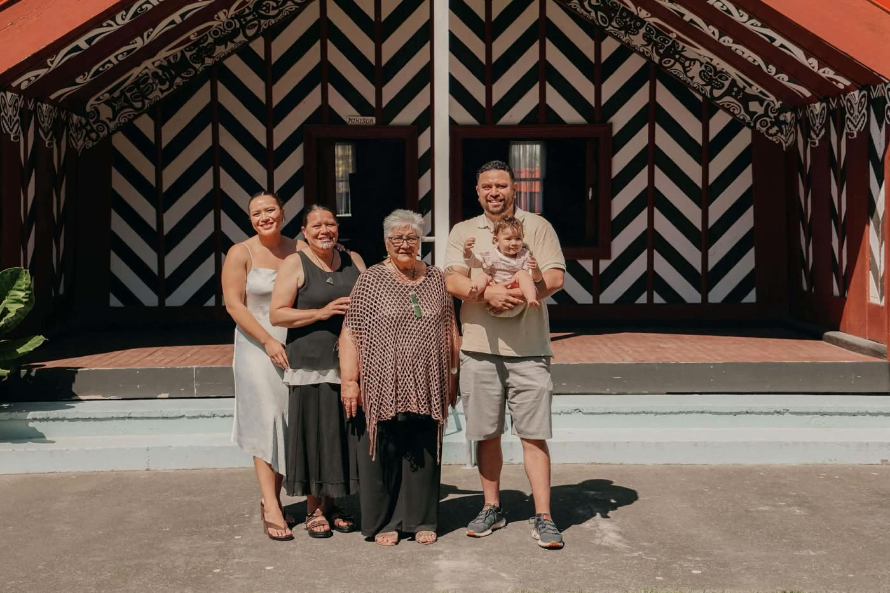
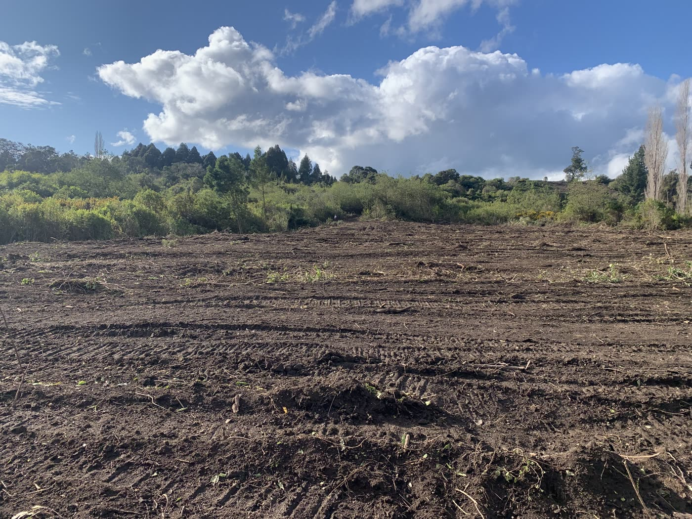
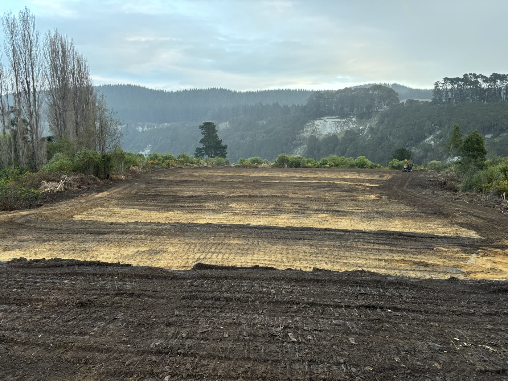
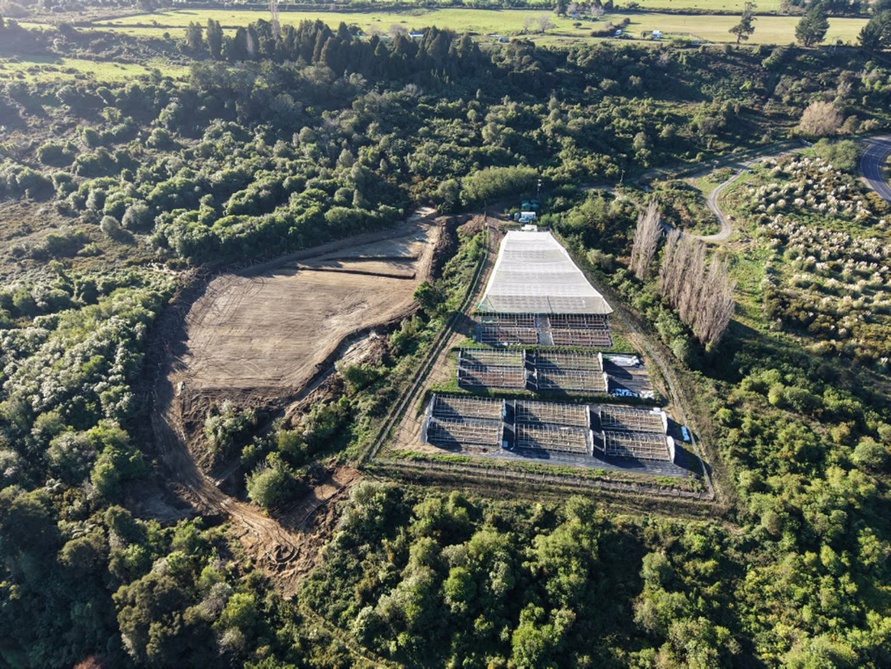
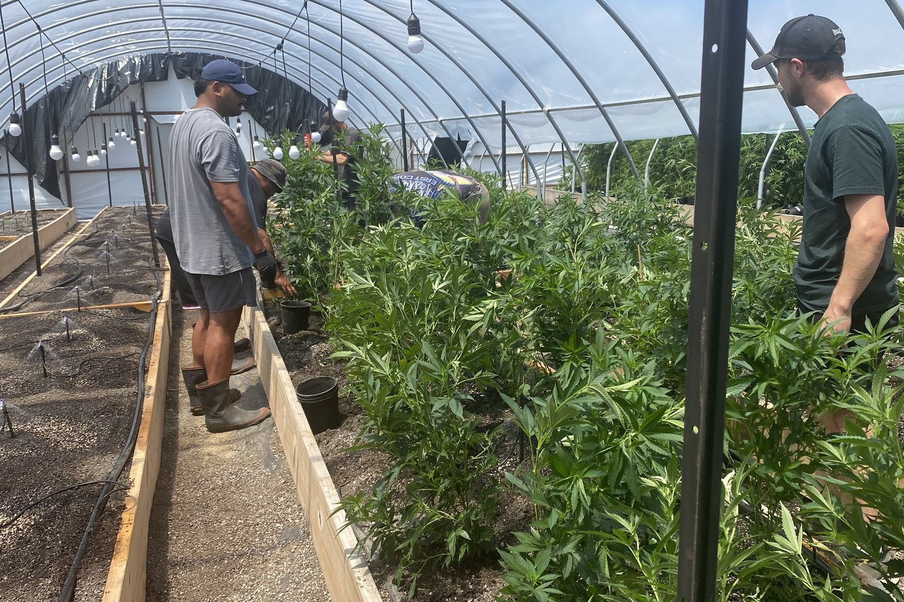
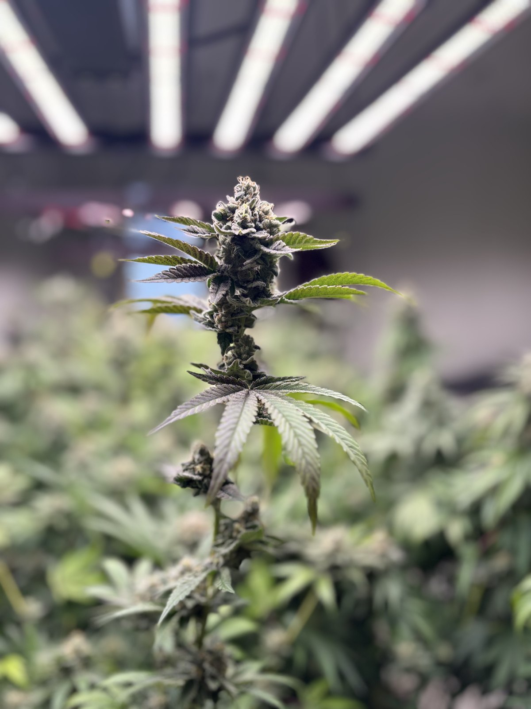

Our whenua.
Our people.
Our future.
Kia ora. Ko Aho tēnei.
Aho Farms is built on the belief that whenua can create more than a crop.
It can create opportunity, skilled employment, stronger Māori participation in the economy, reconnection and intergenerational value.
By creating productive new uses for underutilised Māori whenua, we want to help build an industry in which Māori can participate across the entire value chain — as landowners, employees, investors, leaders and beneficiaries.
This is about what we grow.
And what can grow from it.



In little more than two generations, the shape of Māori life changed.


In 1926, just 15.6% of Māori lived in urban areas. By 1981, that figure had reached 78.5%.
Urbanisation brought access to employment and opportunity, but for many whānau it also meant physical distance from ancestral whenua, marae, hapū and iwi.
Aho cannot undo that history. But we believe creating meaningful economic opportunities on Māori whenua can give more of our people the choice to build careers closer to home.
Returning opportunity to the whenua can create new reasons to return to the whenua.
Source: Statistics New Zealand, New Zealand Official Yearbook.



5% remains. What we do with it matters.
Whenua with potential. Opportunity with purpose.
Today, Māori freehold land represents approximately 5% of New Zealand's total land area, with much of it concentrated in the central and upper North Island.
For Aho, this whenua is not simply a commercial asset waiting to be developed. It is inherited across generations and carries whakapapa, identity and responsibility.
Where whenua is suitable, we see an opportunity to establish high-value cultivation that can generate employment, capability and sustainable economic returns while maintaining the connection between the land and its people.
Source: Te Puni Kōkiri, 2024.
Bring opportunity home.
A medicinal cannabis operation requires far more than growers.
It creates opportunities across horticulture, science, quality assurance, compliance, manufacturing, logistics, technology, management and governance.
Our ambition is to build pathways through those roles for Māori — creating skills that stay with our people, income that supports whānau and experience that contributes to a stronger Māori economy.

We don't only want to grow plants on Māori whenua. We want to grow capability from it.
Māori whenua. Māori capital. Māori participation.
Aho Farms is backed by Māori investment because ownership matters.
We believe Māori economic development is stronger when participation extends beyond land and labour into investment, leadership and ownership.
The opportunity is to create a cycle in which Māori capital helps activate Māori opportunity, commercially sustainable businesses create value, and more of that value has the potential to remain within Māori communities.
mā tātou.
17.5% of the population.
Around 52% of the prison population.
Māori continue to be dramatically overrepresented in New Zealand's prison population.
In 2026, Māori comprise around 52% of people in prison, despite representing approximately 17.5% of the general population.
That disparity extends beyond any single drug, offence or cause. It reflects a much broader and more complex history of inequity within New Zealand's justice system.
Source: Office of the Inspectorate / Department of Corrections, 2026.
The history matters. So does getting it right.
Māori have been disproportionately represented among people identified by Police for personal possession and use of illicit drugs.
Ministry of Health analysis found Māori were identified by Police for these offences at a rate greater than their share of New Zealand's population. While conviction rates declined for both Māori and non-Māori, they declined more steeply for non-Māori.
But an important distinction matters: the evidence does not show that large numbers of Māori have been imprisoned solely for cannabis possession or use. Ministry of Justice analysis indicates imprisonment solely for cannabis possession/use has been rare.
For Aho, acknowledging that history is not about overstating it.
It is about recognising the disproportionate interaction Māori have experienced with drug enforcement while looking toward a very different relationship with cannabis — one based on legal cultivation, science, regulation, employment, ownership and healthcare.
Sources: Ministry of Health; Ministry of Justice.

A different relationship with the plant.
The future we are working toward is fundamentally different from the past.
Cannabis within New Zealand's medicinal framework is a highly regulated healthcare product — cultivated to defined standards and supplied through legal medical pathways.
Our aspiration is for Māori to have meaningful participation throughout that emerging system: from whenua and investment to employment, cultivation, research and leadership — and, where clinically appropriate, access to prescribed medicinal cannabis.
What we cultivate today should create opportunity for generations.
The story of Aho Farms is ultimately not about statistics.
It is about what happens next.
More productive Māori whenua. More skilled Māori employment. More Māori capital participating in emerging industries. Stronger connections between people and place. And meaningful Māori participation in the future of medicinal cannabis in Aotearoa.
Whenua is where this story begins.
Our people are where its value should return.
The thread continues with you.
Trust is grown here too.
Every claim we make is licensed, tested or documented, and available to verified partners.
Licensed Cultivation
Licensed medicinal cannabis cultivator under New Zealand's Medicinal Cannabis Scheme, with every crop grown, dried and processed in Aotearoa.
Independent Testing
Every batch analysed by IANZ accredited Hill Labs in Hamilton. Cannabinoids, terpenes, heavy metals, pesticides and microbials.
NZ Microbial Standard
CFU count below 200, meeting New Zealand's standard, which is stricter than Australia's. Our flower consistently meets it.
Export Pathway
Export licence active, with a documented supply pathway for qualified international partners, beginning with Australia.
Batch Documentation
Full chain of custody from plant to pack. Certificates of analysis accompany every batch released to prescribers and pharmacies.
Prescription Medicine
Dispensed only through licensed prescribers and pharmacies. Never sold direct. Never marketed to patients or consumers.
Company information
Aho Farms Limited is registered in New Zealand and holds licences under the New Zealand Medicinal Cannabis Scheme. The company is Māori-owned and governed, operating from Hawke's Bay with an active cultivation and export licence.
| Registered Name | Aho Farms Limited |
| Incorporated | New Zealand |
| Region | Hawke's Bay, Aotearoa New Zealand |
| Ownership | Māori-owned and operated |
| Licences | Cultivation Licence · Export Licence (NZ Medicinal Cannabis Scheme) |
| Products | RĀ (Oreo cultivar, outdoor sun-grown) · SOURCE (Wake & Cake C30, indoor / consistent supply) |
| Contact | hello@ahofarms.co.nz |